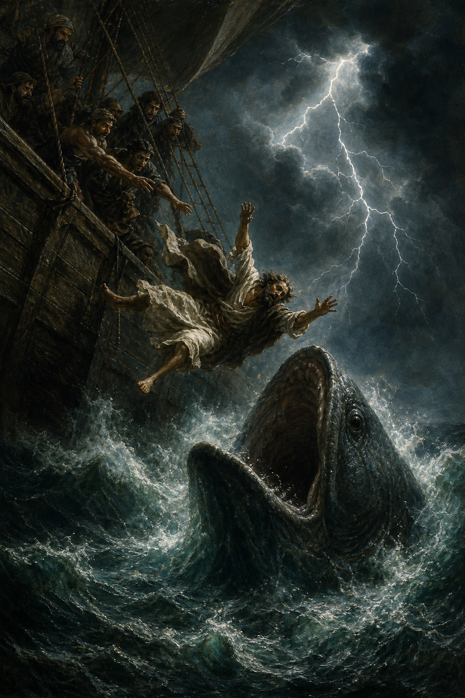

Old Testament · Book 32 of 39
Jonah
A prophet runs the opposite direction from the mission God gives him, gets swallowed by a great fish for his trouble, and ends up angrier at God's mercy than he ever was at his own disobedience.
Unlike every other prophet, Jonah's real problem is not that he doubts God's word — it's that he believes it completely, and wants no part of what it will do for people he despises. Nineveh, capital of Israel's brutal enemy Assyria, is the last city on earth he wants to see spared.
I knew that thou art a gracious God, and merciful, slow to anger, and of great kindness, and repentest thee of the evil.
What happens in Jonah
God tells Jonah to go preach against Nineveh's wickedness, and Jonah instead boards a ship sailing the opposite direction, toward Tarshish. A violent storm threatens to break the ship apart, and after the terrified sailors cast lots to find the cause, Jonah confesses he is fleeing the LORD and tells them to throw him overboard — which, after rowing hard to avoid it, they finally do, and the sea instantly calms. A great fish swallows Jonah, and from inside it he prays a psalm of distress and gratitude, remembering God's temple and promising to fulfill his vows; after three days and nights the fish vomits him onto dry land. God repeats the original command, and this time Jonah obeys, walking into Nineveh and announcing its overthrow in forty days — and to his evident irritation, the entire city, from the king down to the animals, repents in sackcloth and ashes, so God relents from the destruction. Jonah is furious, admitting that this exact outcome is precisely why he fled in the first place, since he knew God's mercy would get in the way of justice; he sulks outside the city, and God uses a short-lived plant that shades and then abandons him to gently expose the smallness and inconsistency of Jonah's compassion, ending the book with God's own question hanging unanswered: should he not spare a great city full of people who cannot tell their right hand from their left?
Why it matters
Jonah turns the prophet into the object lesson rather than the hero, confronting the uncomfortable truth that we can believe in God's mercy and still resent it fiercely when it is extended to people we think don't deserve it. The book ends on a deliberately open question, inviting every reader to examine whose repentance they would rather see refused.